How to Set Up a C++ Development Environment
Getting started with C++ can be a rather daunting task at first, especially if you are
coming from a language such as Python, which needs virtually no set-up required at all.
Sadly, C++, unlike Python, cannot be interpretted at runtime. In order to actually execute your C++ code, you need something
called a compiler. There are many C++ code compilers available, and there are different ones to choose from
depending on your operating system. How do you know which one to use? In this guide, we will show you what you need to do set up a
compiler for C++ on either Windows or Mac. It is worth noting, we will only be going over one method for installing a development environment for each platform.
There are many ways to skin a cat, and this is one of those ways.
Setting up C++ Development on Windows
For the Windows operating system, setting up a comiler is not that complicated. The nice thing about
setting up a compiler is that once you do it you will not have to do it again (Unless you wipe your machine).
In this tutorial, we will use Windows 11, but it will be a very similar process for Windows 10 as well.
Step One - Download Visual Studio Code

The main thing we need for writing our C++ code is an Integrated Development Environment,
and while there are lots out there ranging from extremely simple to incredibly powerful,
we're going to use Visual Studio Code as it has a nice feature set, and is pretty simple to use.
Just click the Visual Studio Code logo on the right to get access to the download page!
Step 2 - Get the C++ Extensions
The nice thing about Visual Studio Code, is that you can accessorize it with various extensions.
For this tutorial, we will be using the extensions needed for C++. These extensions will add things like Intellisense,
support for C++ as whole, and more! To do this, we will navigate to the extension panel.
We will want to search for the C++ extension pack created by Microsoft. This will let us have access to
helpful features like C++ support, and Intellisense.
Step 3 - Create Template Directory
Next, we are going to create a directory for our project template. This will allow us
to reuse the same folder for future C++ programs we choose to create.
Step 4 - Download the Compilers
Go to this website. Here, download the .zip file for the compilers.
Depending on if your operating system is 32 or 64 bit will determine which one you should download.
Make sure to download the first option.
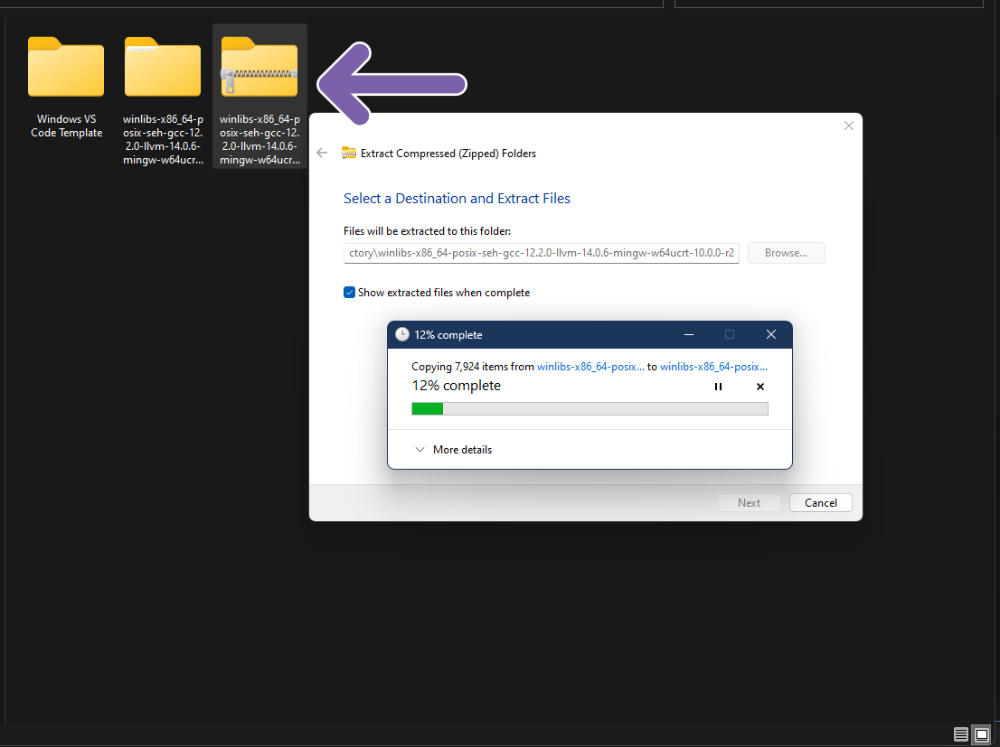
After you download the zip file, we will want to extract it to a location somewhere we will be able to remember
soon.
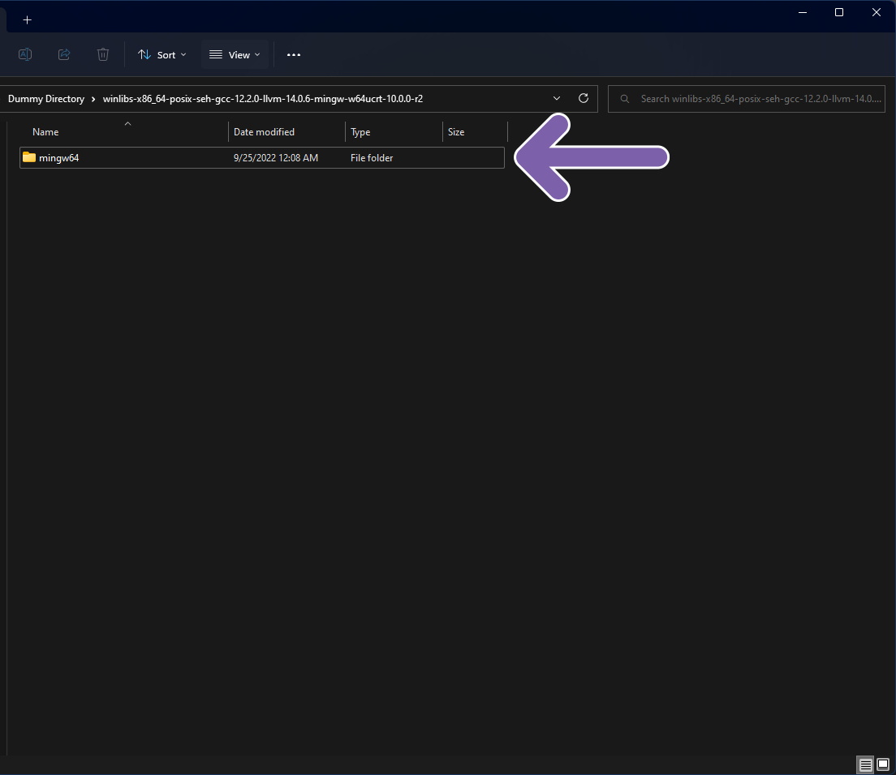
Inside the file, you will see a file named something along the lines of "mingw64". Inside of the file, you will see another
folder named "bin". You will want to store the mingw file somewhere you can leave sit, and you will want to remember the
address of the bin file once you move the parent directory. In this case, we are going to move the mingw folder to our
C drive, but you can put it wherever fits best for you.
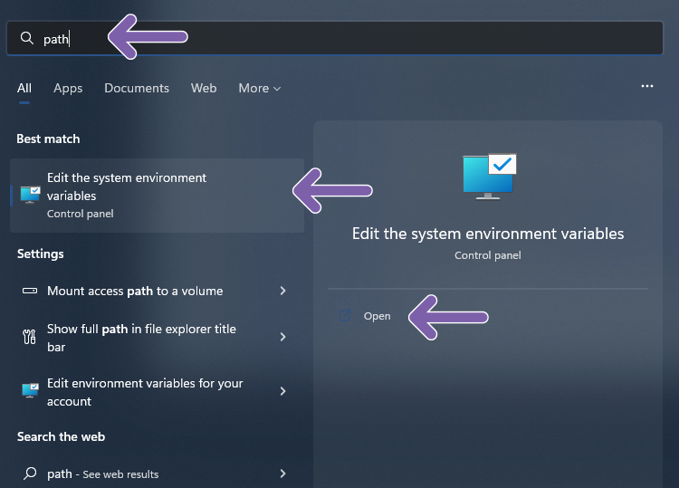
Now that we have set up to location of the compilers, we will want to add them to our Windows environment variables.
To do this, we will search for our our system environment variables in the start menu, or through the control panel.
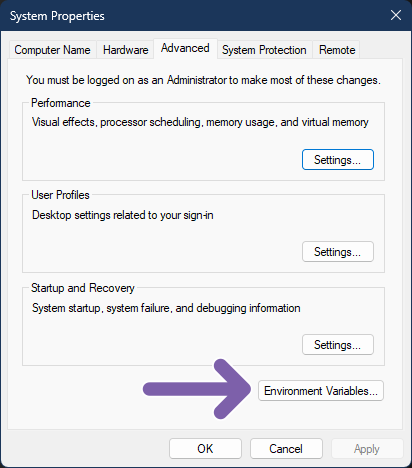
This will open the system properties. Make sure you navigate to the advanced tab. Once you are in the advanced tab,
you will want to click the "Environment Variables" button.
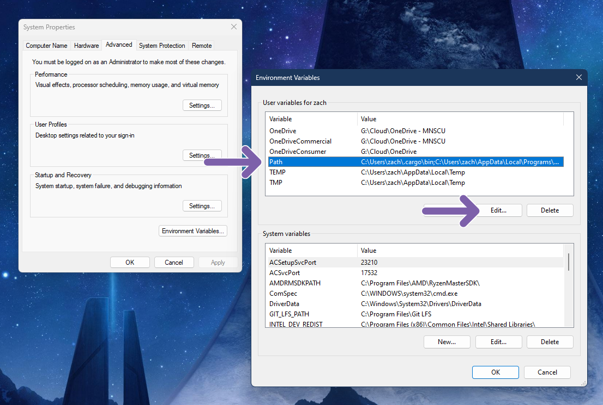
This will open another window to allow you to edit the environment variables. You will want to click on the "Path" option
under the user variables table. After it is selected, click edit.
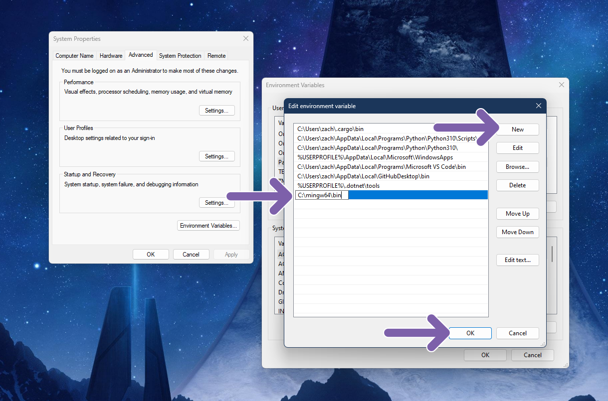
This will open up another Window showing all the directories under this variable. We will want to click the
"new" button to add our compilers. This will let us type a text box in the list of paths. We will want to paste
the address of our mingw bin folder. Once we do that, click "Okay".
Step 5 - Finish Creating Template Directory
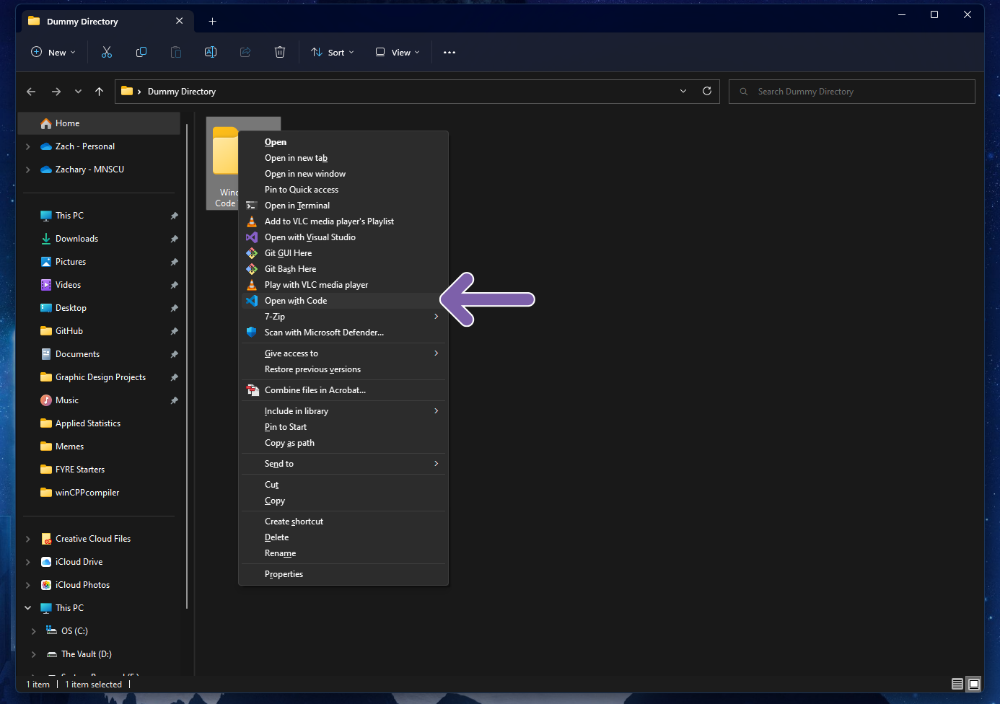
Once we have added our compilers to our path folder, we want to now open our template directory in Visual Studio Code.
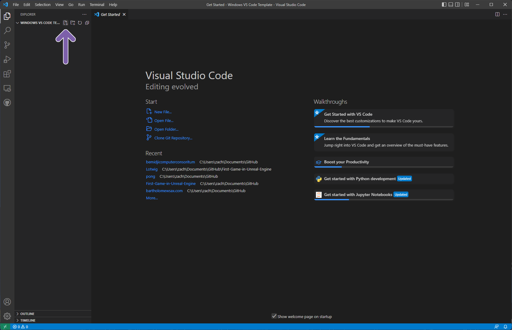
After we open the directory in Visual Studio Code, we will want to then create a new file by clicking the "New File" button.
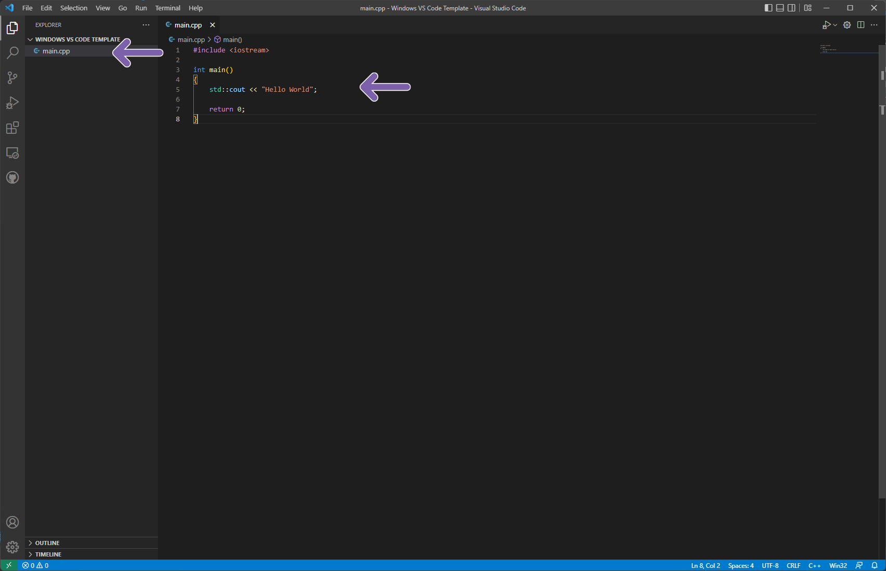
We will then create a new file. We will name it "main.cpp". In the file, we will type a simple hello world program.
This is to test the compiler, and make sure our program works. In the C++ file, we will want to type the follow code:
#include <iostream>
int main()
{
std::cout << "Hello World";
return 0;
}
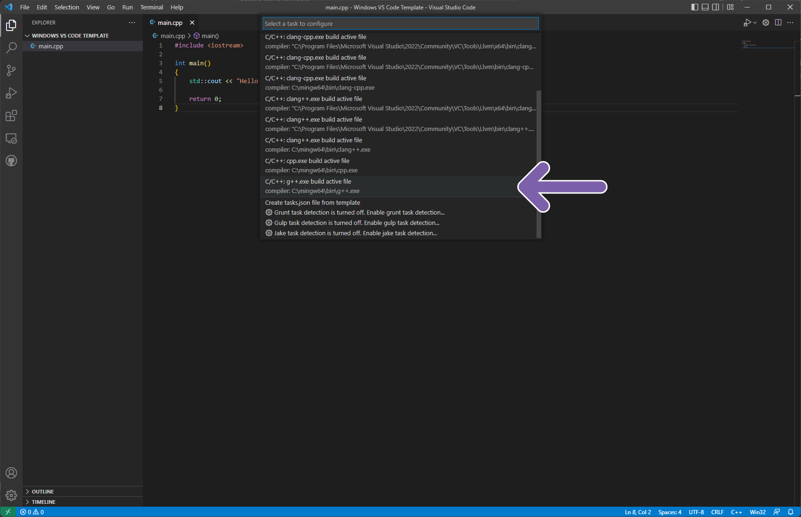
After that, we will want to click the terminal button at the top of the window. In that menu, we will want to click the
"Configure tasks" button. This will open a menu to select detected tasks to configure. We will want to select the G++ option.
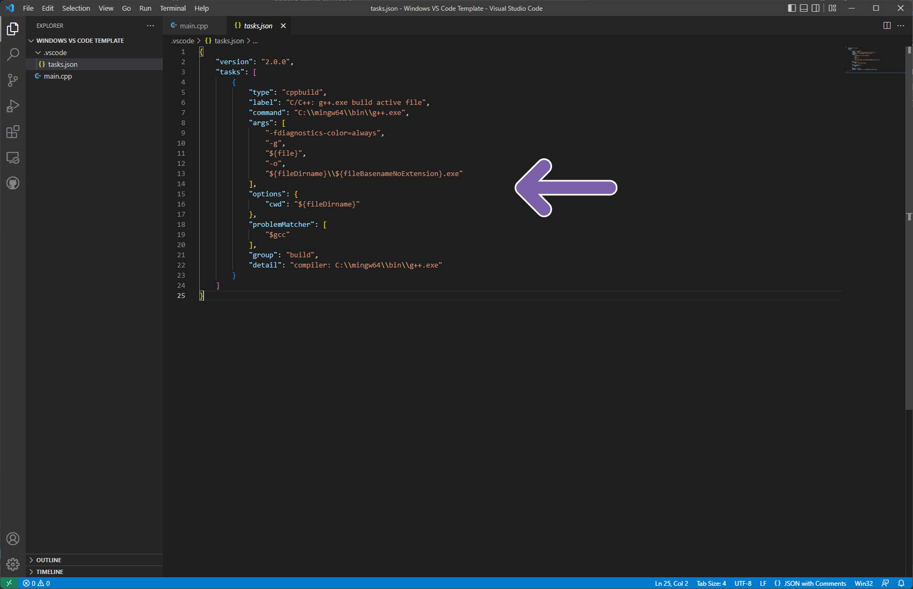
This will create a .json file. This is used by Visual Studio Code to assist it in knowing how to compile our program.
For more information on how to configure the .json file, you can read this article
from Microsoft.
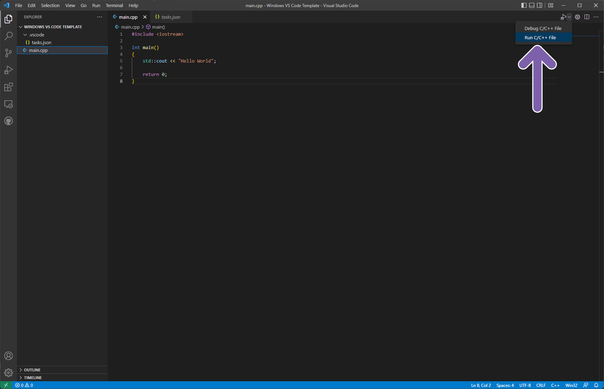
Now that we have configured the C++ compiler inside of Visual Studio Code, we will want to make sure it works.
To do this, we will navigate back to our C++ file, and click the run button in the top right.
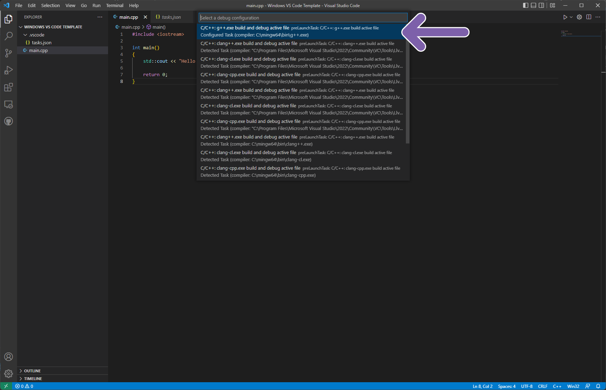
This will open a menu to let us decide which task we want to run to compile our C++ project. We will
select the configured the G++ task.
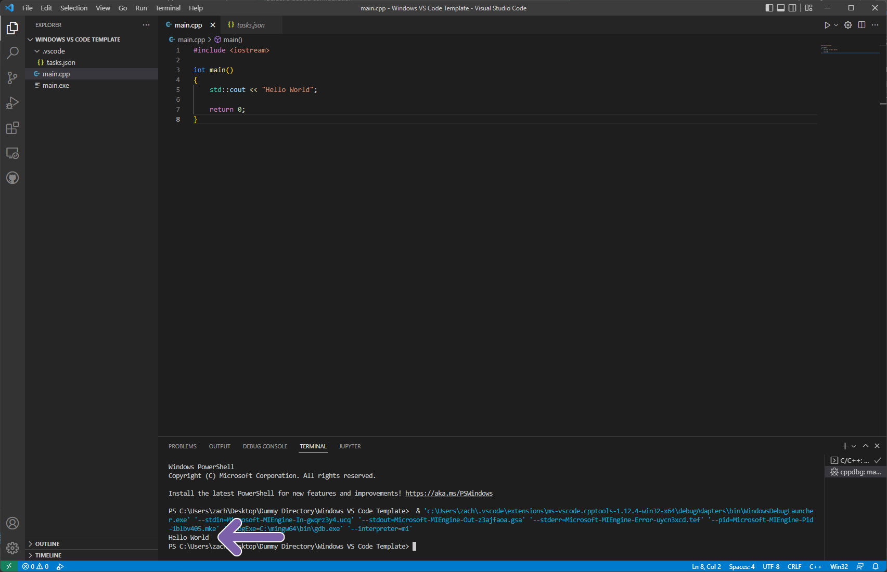
This will then compile the C++ project. Depending on your settings, Visual Studio may automatically run the
executable file created.
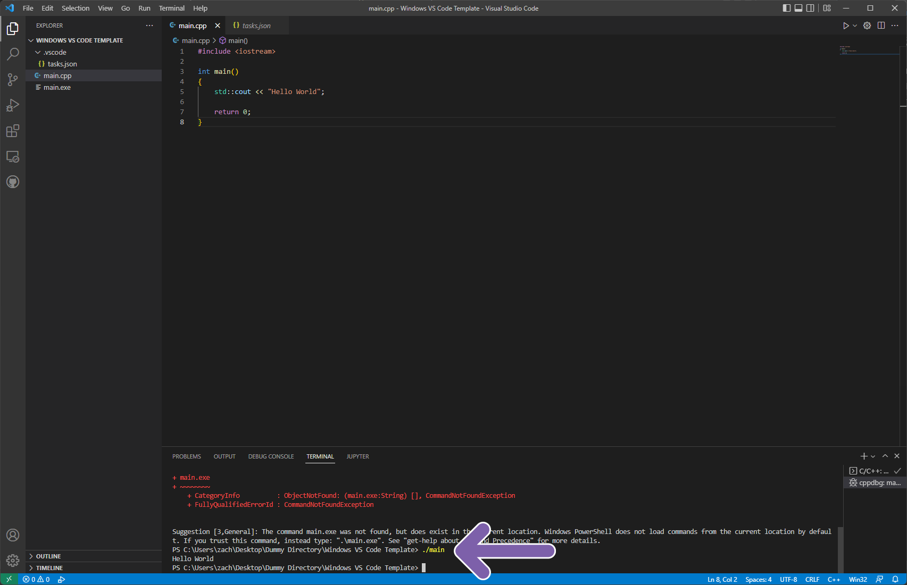
If visual studio does not run the program automatically, do not worry. To run the program, we will
open a new terminal, and type "./main". We will then see the output of our program in the terminal.
Congratulations, you have set up your Windows C++ development environment!
Setting up C++ Development on MacOS
Just like the Windows operating system, setting up a C++ compiler is not that hard.
It can actually be easier in some regards if you already have Xcode (an IDE created by Apple).
In this tutorial, we will be using MacOS Monterey 12.6, but it should work for future versions of MacOS.
If you run into errors, try using an older version of Xcode.
Step One - Download Visual Studio Code
The main thing we need for writing our C++ code is an Integrated Development Environment,
and while there are lots out there ranging from extremely simple to incredibly powerful,
we're going to use Visual Studio Code as it has a nice feature set, and is pretty simple to use.
Just click the Visual Studio Code logo on the right to get access to the download page!
Step Two - Get the C++ Extension
The nice thing about Visual Studio Code, is that you can accessorize it with various extensions.
For this tutorial, we will be using the extensions needed for C++. These extensions will add things like Intellisense,
support for C++ as whole, and more! To do this, we will navigate to the extension panel.
Once we navigate to the extension panel, we want to search for "C++" in the search bar. We want to click on the extension
called "C++ Extension Pack" by Microsoft.
After that, we want to click the "Install" button. This should only take a few seconds.
The next step for us to do after installing the extensions is to download the Clang compiler for MacOS. There are a couple ways to do this, but probably the easiest way
to do this is to install Xcode.
Step Three - Download the Clang Compiler (Xcode)

Xcode can either be downloaded from the Mac App Store, or it can be downloaded from the Apple Developer Website.
This is probably the easiest and most common way people acquired the Clang compiler. If you don't want to download Xcode, you can find instructions for downloading
and setting up the standalone Clang compiler here.
Step 4 - Create a Template Directory
To avoid having to set up the Clang compiler inside of VS code multiple times, it is a good idea to set up a template directory we want to use
to create our future C++ projects in.
The first thing we need to do is create our template directory. We are just going to call this "VS Code Template Directory",
but you can name this whatever you want.
The next thing we are going to do is open up Visual Studio Code, and then open that new folder we just
created inside of Visual Studio code.
You may get a prompt from Visual Studio similar to this asking if you wish to trust the authors. This is a security
feature built into Visual Studio Code, and is there in the event you may accidentally download malicious code from the web.
In this instance, since we are the author and creator of the folder, we are going to click "Trust".
Now that we are inside of folder in Visual Studio Code, we need to create our main.cpp file.
To do this, we are going to click the "Create File" button at the top of our template folder.

As you can see, a new C++ file was created inside of the folder. If it does not open automatically, you will
want to click on the file to open it in the editor.
Inside of our editor, we are going to write a simple "Hello World" program to test that our C++ compiler is functioning properly.
In the editor, we are going to write the following:
#include <iostream>
int main()
{
std::cout << "Hello World";
return 0;
}
After we have typed out our main function, we are then going to click Terminal in the menu bar, and then click the
"Configure Tasks" button.
After that we will have a menu appear. This will show us the available "tasks" we can perform.
Because we want to build a C++ file with Clang, we are going to click the "clang++" option.
This will create a tasks.json file for the code editor to use to compile our code. If you wish to learn more about the
different parameters you can select, you can read this documentation
from Microsoft for more information.
After we do this, we are going to navigate back to our C++ file and click the run button. It is important to note,
if you see the run button with the bug icon on it, you need to click the drop-down menu to the right and click the
"run default tasks" option.
This will show a new menu in the editor. You will want to click the "Clang++" option, and the compiler will run.
You will see confirmation in the terminal if your program compiled successfully, or if it had errors. You should not have any errors
in this instance, as the code has been tested and works. If you have errors, you may want start this guide from the beginning.
To run our newly compiled program, we need to open a new terminal. To do this, click "Terminal" in the menu bar, and click "New Terminal".
This will open a new terminal in VS Code at the bottom. In the terminal, we will want to execute the executable file we just created.
We will do this by typing "./main".
You will see the output from the program in the terminal. Since all our program does is print "Hello World!", that is all that is output.
Congratulations, you have set up your MacOS C++ development environment!